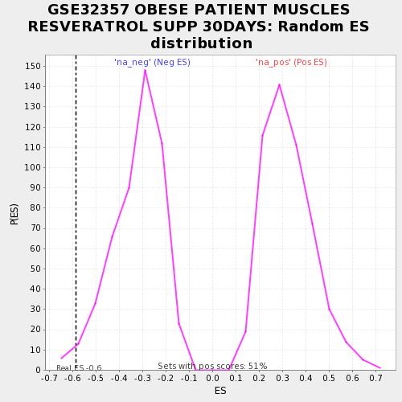

| | | Dataset | testA |
| Phenotype | NoPhenotypeAvailable |
| Upregulated in class | na_neg |
| GeneSet | GSE32357 OBESE PATIENT MUSCLES RESVERATROL SUPP 30DAYS |
| Enrichment Score (ES) | -0.58536583 |
| Normalized Enrichment Score (NES) | -1.8084384 |
| Nominal p-value | 0.018329939 |
| FDR q-value | 1.0 |
| FWER p-Value | 0.809 |
Table: GSEA Results Summary
 Fig 1: Enrichment plot: GSE32357 OBESE PATIENT MUSCLES RESVERATROL SUPP 30DAYS
Fig 1: Enrichment plot: GSE32357 OBESE PATIENT MUSCLES RESVERATROL SUPP 30DAYS
Profile of the Running ES Score & Positions of GeneSet Members on the Rank Ordered List
| PROBE | GENE SYMBOL | GENE_TITLE | RANK IN GENE LIST | RANK METRIC SCORE | RUNNING ES | CORE ENRICHMENT | | 1 | ATF3 | | | 24 | -1.795 | -0.4816 | Yes |
| 2 | SARDH | | | 25 | -1.823 | -0.3761 | Yes |
| 3 | SRBD1 | | | 26 | -1.842 | -0.2696 | Yes |
| 4 | PRSS12 | | | 28 | -1.874 | -0.1856 | Yes |
| 5 | HSPA13 | | | 35 | -2.068 | -0.2123 | Yes |
| 6 | DLG2 | | | 40 | -2.332 | -0.1750 | Yes |
| 7 | ARHGAP44 | | | 47 | -2.744 | -0.1626 | Yes |
| 8 | CAPS2 | | | 48 | -2.812 | -0.0000 | Yes |
Table: GSEA details [plain text format]

Fig 2: GSE32357 OBESE PATIENT MUSCLES RESVERATROL SUPP 30DAYS: Random ES distribution
Gene set null distribution of ES for GSE32357 OBESE PATIENT MUSCLES RESVERATROL SUPP 30DAYS